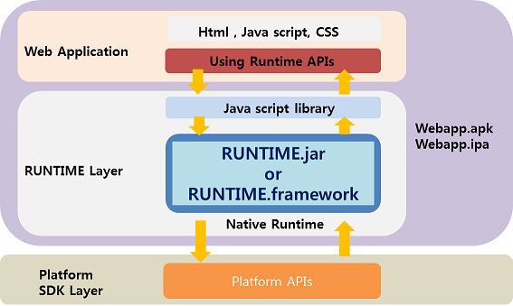
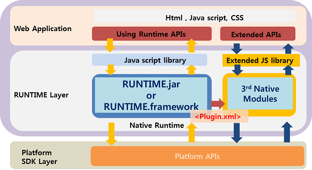

Cornerstone Runtime 기본구조
공통 Runtime 기본구조
- WebApp 구조도

- PlugIn 구조도

Cornerstone Runtime은 크게 platform 별 Native Layer와 Java Script Layer의 2가지의 layer로 나뉘어 진다.
Native layer는 각 플랫폼 별 Webview를 포함하여 사용한다.
Native layer는 각 플랫폼 별 사용되는 언어로 개발되어 있으며 JavaScript layer에서 요청된 DeviceAPI 를 플랫폼 SDK를 이용하여 처리된다.
Runtime JavaScript layer
Java Script layer는 웹앱에서 사용하기 위한 JavaScript API들을 선언 및 정의 하며 이를 Runtime의 native layer와 연결하는 역할을 한다.
SRT-x.x.js 형태로 배포 되며 Runtime이 업데이트 될때마다 버전명이 올라간다. > 2013.01.20 기준 SRT-0.9.1.js 배포
SRT-x.x.js 는 크게 두가지 역할로 구분된다.
- DeviceAPIs : 웹앱에서 사용하는 JavaScript API ProtoType 정의
- exec module: JavaScript APIs 를 Native Runtime Library와 연결하여 통신하는 공통 인터페이스 모듈
- js prompt()함수를 native 단에서 재정의 하여 JavaScript와 native의 연결 통로가 된다.
Android Runtime 기본 구조
Android Native Layer
Android Webview를 이용하여 Runtime JavaScript Library에서 호출된 API를 그에 해당하는 Native Class를 실행하고 성공/실패 콜백 전달하는 모듈
WebApp에서 Device의 특정 기능을 수행 및 webview를 사용하기 위하여 Runtime.jar 가 배포된다.
- Runtime.jar는 Java class로 구성되어 있는 Android용 native library 이다.
- Runtime.jar는 web app의 index.html을 load하는 파일을 포함 하고 있다.
- Runtime.jar는 Cornerstone Runtime에서 제공하는 DeviceAPI가 포팅되어 있다.
- Runtime.jar는 Native code로 모듈화 되어 Android SDK 로 부터 작업을 수행하고 결과를 JavaScript layer에 반환 한다.
Android Project Files
Android용 webapp을 개발하기 위해서는 아래 와 같은 project file 들을 세팅하여야 한다.
1) AndroidManifest.xml
- WebApp의 고유한 package 명 설정
2) res/value/string.xml
- 실제 단말에서 보여지는 WebApp의 이름 설정
3) res/drawable/icon.png
- 실제 단말에서 보여지는 아이콘 설정
iOS Runtime 기본 구조
iOS Native Layer

UIWebview를 이용하여 Runtime JS Library에서 불리는 API를 그에 해당하는 Native Class를 실행하고 성공/실패 콜백 전달 모듈
- RuntimeDelegate : UIWebview를 생성하고 Runtime API를 연동
- ViewController : UIWebview와 Device를 연결하고 Orientaion을 제어
- Commands : JS API 를 Native Platform API를 통해서 구현
- Utils : JSON / Base64 / ExtendMutableArray / ExtendMutableDictionary 라이브러리
SRT.framework 라는 이름으로 배포된다.
iOS Project Files
iOS용 webapp을 개발하기 위해서는 아래 와 같은 project file 들을 세팅하여야 한다.
1) SRT_Template-Info.plist
- iOS 어플 설정을 위한 프로젝트 파일
2) SRT.plist
- Cornerstone Runtime 설정을 위한 프로젝트 파일
3) Resources
- icon / splash screen 용 이미지 파일들